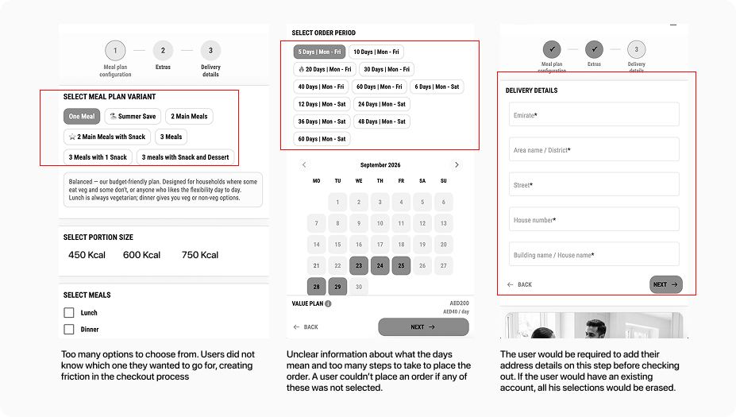
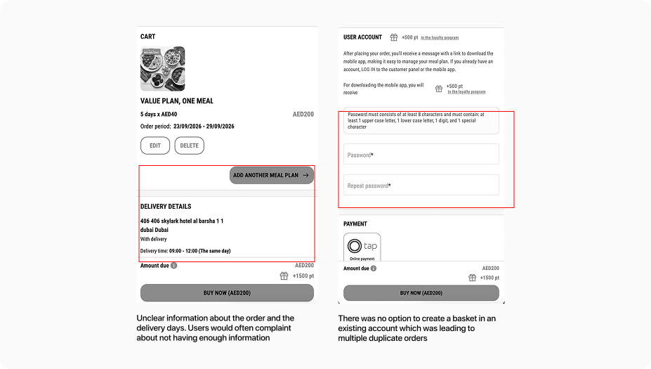
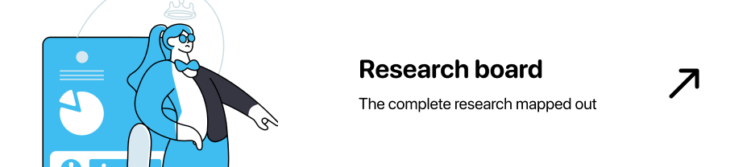

Overview
-

Problem
FITT Meals customers were dropping off before they ever tasted a meal. Survey data showed 61% found plan customization confusing, 57% didn't understand the total cost until checkout, and most of them dropped right before placing the order. The ordering flow wasn't just imperfect — it was actively working against conversion.
-

Central Question
How might we redesign the meal-plan journey so it's easy to navigate, easy to convert on, and intuitive enough that a first-time visitor understands exactly what they're getting, and what it costs, before they're ever asked to create an account?
-

Result
Redesigning the journey around transparency, guided simplicity, and self-serve flexibility lifted conversion by 146% and cut bounce rate from 28% to 7%.
The full story
FITT Meals was doing good, but they were not near where they wanted to be. Users kept dropping off before placing an order and they couldn't understand why. The paid media budget was very high but the results weren't coming in. They had an ambitious goal to reach 2500 customers this year and the way the numbers were tracking, it wasn't happening.


Research
To understand why people were leaving, I ran a mixed-methods research effort: competitor analysis, a SWOT review of three direct UAE competitors (Calo, Kcal, and Meals on Me), and a behavioral study of what actually drives meal plan buyers in this market — all mapped out on one board.

Survey Findings
We also sent out a survey for UX and auto-renew and mapped out the results.
A survey of current, lapsed, and warm customers surfaced the real reasons people hesitated or churned — not vague dissatisfaction, but specific, fixable moments in the signup flow and how they felt about the meal plan being an auto renew service rather than them having to order every month.
Survey demographic: 92 respondents
Subscriber status
Top pain points
81%
Hard to place an order due to repetitive steps
61%
Said plan customization was unclear during signup
Defining Personas
Three segments emerged; a busy professional who had no time to cook and wanted a meal plan. A weight loss seeker who wanted to optimise her routine and health and an overwhelmed parent who just couldn't manage kids and meals at the same time.
Sara
The Working Professional
- Goals
- Hit a precise macro target with minimal weekly decision-making; keep delivery reliable around training sessions.
- Frustrations
- Vague “healthy” labels instead of real per-meal macros; customization built for beginners.
- Decision drivers
- Precision, meal-swap flexibility, reliable delivery windows.
“If I can’t see the macros per meal before I subscribe, I assume the plan wasn’t built for someone like me.”
Mariam
The Weight-Loss Beginner
- Goals
- Eat better without becoming a nutrition expert; avoid feeling locked into a rigid subscription.
- Frustrations
- Jargon-heavy plan builders; unclear total pricing; hidden cancellation flows.
- Decision drivers
- Trust signals, visible pricing, a real low-commitment trial.
“I just want someone to tell me what to eat that fits my goal — I don’t want to become an expert to sign up.”
Fatima
The Family Health Manager
- Goals
- Cover multiple dietary needs (halal + allergy) from one plan; flex delivery around school and Ramadan.
- Frustrations
- Dietary filters that handle only one restriction at a time; schedule changes that need a support call.
- Decision drivers
- Explicit halal/allergen compliance, scheduling flexibility, household value.
“I need to know it’s easy to do and hassle free before I’ll even look at the menu.”
Project challenges
Design considerations
Every decision was filtered through one test: does this remove a moment of hesitation, or add one?
Key Points: transparency first (price, halal status, and macros visible before commitment); guided by default, precise on demand (goal-based presets up front, advanced customization one tap deeper); flexibility is self-serve (no support ticket to pause, skip, or swap); trust is designed in (reviews and outcomes surface right when someone's deciding).
Visual DNA
Clean, food first, appropriate, and calm. A light neutral base lets food photography do the selling, while a single confident accent color carries every price, macro number, and call-to-action.
Layout and Hierarchy
The page reorders what competitors bury: price and dietary compliance sit at the top of every plan card, per-meal macros are visible without a click, and customization is progressive.
Interactions
Meal swaps recalculate the weekly macro total live. Pause, skip, and reschedule are one tap in account settings. A WhatsApp-style support entry point appears exactly at the moments most likely to cause doubt, rather than being buried in a help center.
Core features
AI meal selection- based on your preferences or what people rate the most popular as, if you are a first time user.
Choose your goal
Pick a preset — "lose weight," "build muscle," or "eat better" — and the plan builds itself around it instead of starting from a blank macro calculator.
See exactly what you're getting
Price, macros, and delivery days are visible before payment — no account required just to see what a plan costs.
Manage it your way
Swap, skip, or pause anytime, all from one screen — no support ticket required.
By replacing ambiguity with visible pricing, a manual macro-builder with guided presets, and support-dependent flexibility with self-serve controls, the redesigned journey turned FITT Meals' biggest drop-off points into its clearest selling points — a 146% lift in conversion and a bounce rate cut from 28% to 7%.